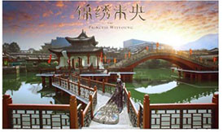
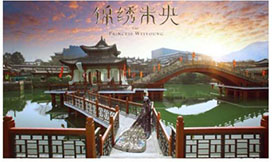

中国古风摄影大赛横店火热进行中
2017年04月14日
21:32:41 来源：齐鲁晚报
齐鲁晚报04月14日讯：四月，姹紫嫣红，国家5A级旅游景区——横店影视城迎来了一年中最美的景致。
一场以“古风”作为主题的全民摄影大赛，正在新浪微博中如火如荼地展开，此次大赛由横店影视城联合新浪图片发起，比赛分为业余组和专业组，选手们以横店各横店历史场景为背景，或建筑或人物或风景，进行“古风”主题创作投稿。

参赛作品（@沐春风古风摄影）

参赛作品（@沐春风古风摄影）
2000多年前雄伟奢华的阿房宫付之一炬，现如今，它屹立在秦王宫景区，那四海归一殿的威严脸一丝一毫都没有消退；明清宫苑景区以故宫为原型1:1打造，一展紫禁城的皇家风采，是众多宫廷戏的主要拍摄地，更有老北京胡同、恭亲王府等不同风格的建筑群；张择端的一幅《清明上河图》收尽了北宋民间的繁华盛世，深受皇帝宋徽宗的喜爱，而横店清明上河图景区更是在还原作品的基础上增添了一丝古韵；还有投入巨资将各派民间古建筑搬迁到横店的明清民居博览城，秦汉风、明清风、北宋风、民间古风等多种古风让横店拥有如同中国画作一般的风韵，在这里开启中国古风摄影大赛可谓是恰如其分。